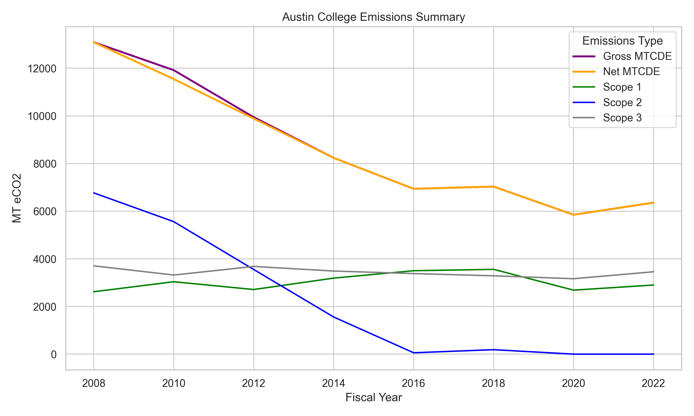

AC Carbon Emissions Project
📄 View or Download ACSC Poster
Abstract
- In this work, we investigate the feasibility of Austin College (AC) achieving its goal of carbon neutrality by 2035. This project examines AC’s carbon footprint using data from SIMAP (Sustainability Indicator Management and Analysis Platform) to assess progress toward that goal. The focus is on tracking AC’s emissions data from 2008 to 2022 across Scopes 1, 2, and 3, as well as Gross and Net MTCDE (Metric Tons of Carbon Dioxide Equivalents). This analysis includes reductions over time and a comparison of AC’s progress toward carbon neutrality with that of similar liberal arts colleges.
Introduction
- This project explores the carbon footprint of Austin College (AC) using data from SIMAP (Sustainability Indicator Management and Analysis Platform). The focus is on tracking AC’s emissions across Scopes 1, 2, and 3, analyzing reductions over time, and comparing progress toward carbon neutrality with similar liberal arts colleges.
- The primary research questions are, Is Austin College’s carbon neutrality goal for 2035 attainable? What long-term emission reduction trends can be observed from 2008 to 2022? How do Austin College’s emissions and policies compare to those of other small institutions like Agnes Scott College, Bowdoin, Hobart & William Smith, and Whitman? What behavioral, policy, or infrastructure changes have the most measurable effect on emissions?
Visualizations
- Scope Contribution
- Category Breakdown
- Offsets and Renewables
- Building-Level Analysis

Tutorial Overview
- Alongside research, this project produces a tutorial demonstrating how to read and analyze CSV emissions data using pandas, how to visualize emission trends with matplotlib and seaborn, how to interpret fluctuations and tie them to real-world events, and how to compare multiple institutions by selecting groups of colleges for analysis.
Conlcusion
- The research addresses whether Austin College’s carbon neutrality goal by 2035 is achievable by documenting emission trends from 2008–2022, identifying key drivers of reductions and remaining challenges, comparing AC’s performance with peer institutions, and highlighting the balance between gross and net emissions, and the role of offsets and renewable energy.
- We can conclude that if AC’s Scope 3 emissions remain high, stronger policies on commuting, purchasing, and air travel will be essential. However, continued investment in renewables and strategic offsets could make the 2035 target realistic.
Title
- words
Special Thanks
- Austin College
- SIMAP Link
- Dr. Samuel Kroger